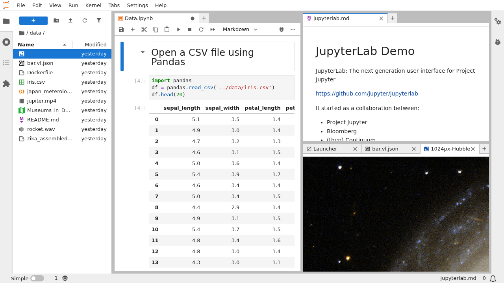

Mise en situation
Vous êtes situation comme stagiaire data dans une grande entreprise.
On vous confie un dossier contenant :
- plusieurs fichiers de données
- des formats différents
- peu de documentation
On vous demande :
« Analyse ces données et explique-nous ce que tu observes. »
Bloc 1
Qu’est-ce que faire une analyse de données ?
Une première intuition
Analyser des données, ce n’est pas :
- appliquer une formule
- lancer une commande magique
- produire immédiatement un résultat
Concept clé
Analyser des données, c’est transformer des données brutes
en informations compréhensibles.
L’analyse comme processus
Une analyse de données, c’est :
👉 Ce cycle est itératif.
Exemples de transformations
Transformer des données, c’est par exemple :
- sélectionner des colonnes
- filtrer des lignes
- regrouper des valeurs
- calculer des statistiques simples
- résumer l’information
👉 Rien de tout cela n’est automatique.
Où intervient le code ?
Pour enchaîner ces transformations,
on a besoin d’un langage.
👉 En data science, ce langage est très souvent Python.
Rôle des bibliothèques Python
En Python, on n’écrit presque jamais tout à partir de zéro.
On utilise des bibliothèques, c’est-à-dire :
- des outils spécialisés
- déjà écrits
- testés
- réutilisables
👉 Elles permettent de se concentrer sur l’analyse.
Exemples de bibliothèques (vue d’ensemble)
Sans entrer dans le détail :
- pandas → manipuler des données tabulaires
- numpy → calculs numériques
- matplotlib / seaborn → visualisation
- scikit-learn → modèles simples
Chaque bibliothèque correspond à un type de transformation.
Vers la notion de pipeline
Une analyse complète (ou pipeline) ressemble rarement à une seule action.
Elle prend plutôt la forme :
- données
- nettoyage
- transformation
- analyse
- résultats
👉 Nous verrons des exemples de pipeline
Pipeline (définition simple)
Un pipeline est une suite d’étapes organisées
qui transforment des données en résultats.
Même données + mêmes étapes = mêmes résultats
Environnement
Pour travailler sur ce processus de façon efficace,
il faut un environnement adapté.
C’est le role des notebooks
Phrase à retenir
Analyser des données,
c’est enchaîner des transformations de manière cohérente
Bloc 2
Pourquoi, en data science, on ne commence presque jamais par écrire un programme complet ?
Un notebook sert à explorer vite (boucle courte) avant de structurer.
Sans ça
- démarrage difficile
- peu adapté à l’exploration
- débogage lent
- rigidité face aux essais / erreurs
Notebook : l’environnement de travail en data
Qu’est-ce qu’un notebook ?
Un notebook est un document interactif qui permet de :
- écrire du code par étapes
- exécuter ce code cellule par cellule
- voir immédiatement les résultats
- documenter le raisonnement
On explore avant de structurer.
Le notebook = environnement d’exploration interactive
Un notebook est un fichier, le plus souvent avec l’extension :
.ipynb
Ce fichier contient :
- du code
- du texte (commentaires, explications)
- des résultats d’exécution (tableaux, graphiques, sorties)
Tout est enregistré au même endroit.
Architecture

IDE (Integrated Development Environment)

Integrated Development Environment

Integrated Development Environment

Integrated Development Environment

Jupyter IDE
Jupyter Notebook != Jupyter Lab
Jupyter Notebook

Jupyter Lab

Analyse réelle dans un notebook
- Charger les données
- Regarder les premières lignes
- Nettoyer progressivement
- Calculer / résumer
- Visualiser
Ce que montre un notebook
Un notebook montre :
- le raisonnement
- les essais
- les choix intermédiaires
Le notebook est un format de raisonnement interactif
Un notebook, c’est l’outil pour raccourcir la boucle essai → résultat → ajustement.
Bloc 3
Pourquoi structurer une analyse en pipeline ?
Intuition
Quand on analyse des données :
- on fait des allers-retours
- on modifie des étapes
- on recommence souvent
👉 alors tu ne sais pas encore quelle analyse faire.
Phrase à retenir
En analyse de données,
ce n’est pas le pipeline qui compte d’abord,
mais la question qu’il sert.
Conclusion
Ce qu’il faut retenir
Aujourd’hui, l’idée centrale est simple :
Une analyse de données, c’est un processus.
Pas une commande magique.
Trois repères
- 1. On part d’une question
- 2. On enchaîne des transformations cohérentes
- 3. On structure le tout en pipeline
👉 Le code n’est qu’un moyen de rendre ce processus efficace.
La règle d’or
La question guide le pipeline,
le pipeline guide les transformations,
les transformations produisent les résultats.
Ce qu’on va faire ensuite
Dans la suite du cours, on va :
- ouvrir un notebook
- charger un premier jeu de données
- construire un mini-pipeline (nettoyage → transformation → analyse)
👉 Objectif : voir le processus “en vrai”.
Réponse à la question de départ
On analyse des données réelles
en partant d’une question claire,
en structurant l’analyse en pipeline,
et en utilisant les outils comme des moyens —
jamais comme des objectifs.
👉 En analyse de données,
le plus important n’est pas l’outil,
mais la question que l’on cherche à résoudre.
Comment analyser des données réelles sans se perdre dans le code ni les outils ?